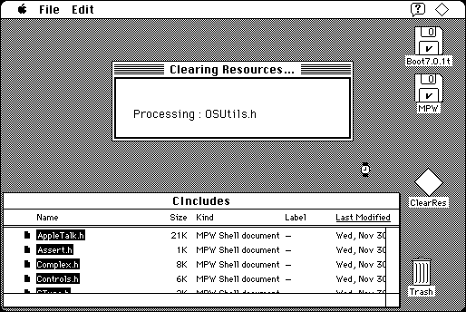

Download
ClearRes.zip (8K) ClearRes repackaged into a zipped hfs disk image and checksum file. The disk image can be mounted with Mini vMac.
ClearRes.sit.hqx (12K) ClearRes in the original format.
copyright: Ralph S. Sutherland
mod date: Dec 30, 1992
license: freeware
from url :
Mac Stuff
“Zeroes the resource fork of ANY file”. Can be used to clear settings that some applications, such as MPW, store there.

If you find these downloads useful, please consider helping the Gryphel Project, which hosts them.
Here are the md5 checksums for the downloads, signed with Gryphel Key 5:
--------- GRY SIGNED TEXT --------- 3f039d384a30f57f728aff2dbb11af1b ClearRes.zip 11f307d337d4e813477e949751a7613d ClearRes.sit.hqx ------- BEGIN GRY SIGNATURE ------- Gry/4Xa8CFcUzxdN/CVWZXwQVjTMr2sh+bK5jW3dM1B6Rfi6ICKQkd0fczVUi+6o cdqo5vaysqe2T5AzvjLai4PD7kRJFDSm/GV5sfO4eQEza30MYjAItRlX0MWqgvP6 P+ZNPu+L2ARiHVJ88SXYwUNPCbif2yYlIx4w43gwRRy6vIYLpMG/3clgYCdP1896 -------- END GRY SIGNATURE --------